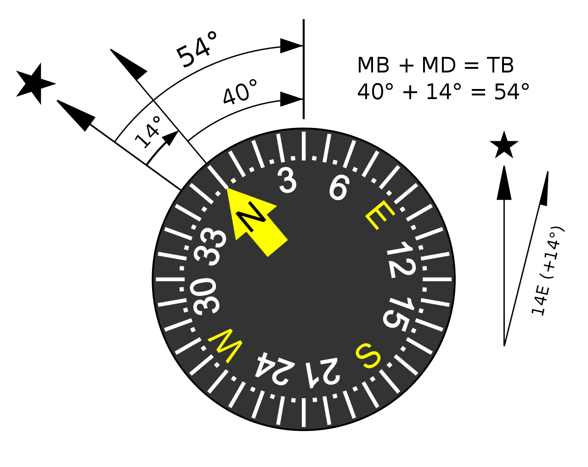
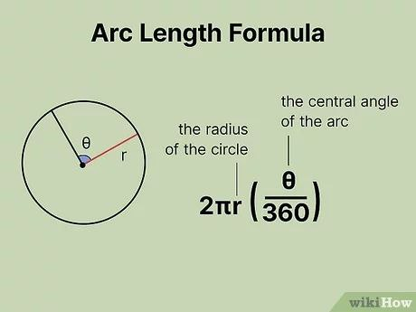
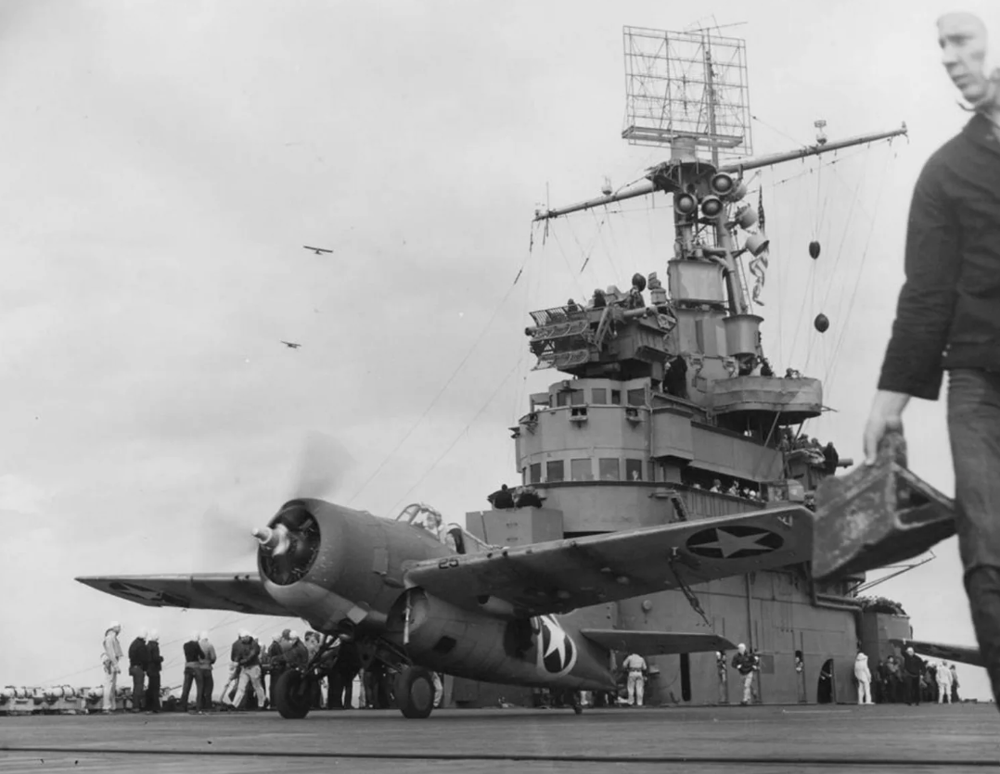
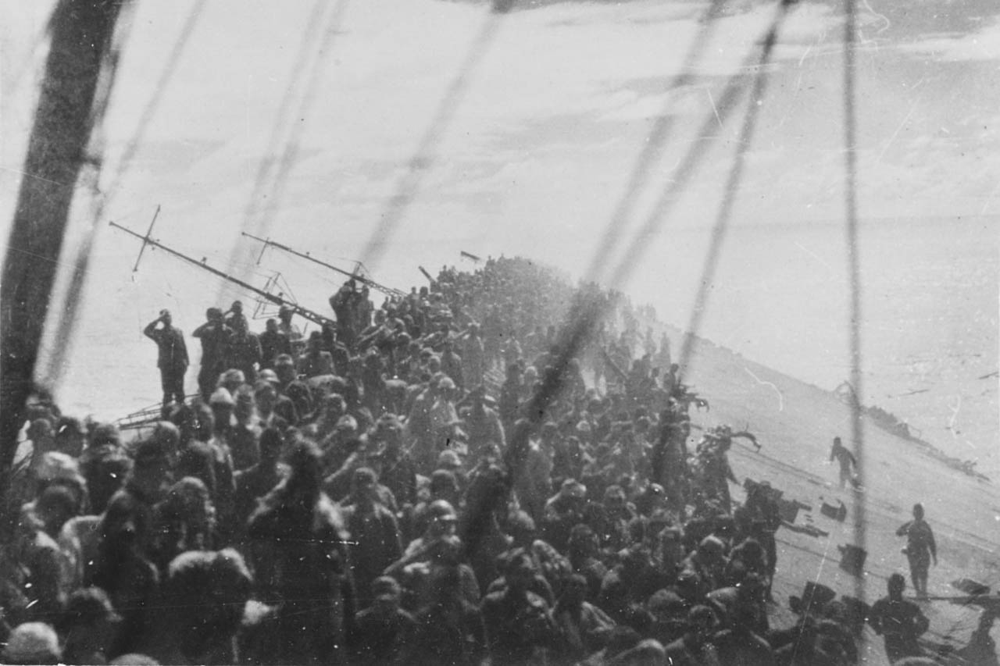
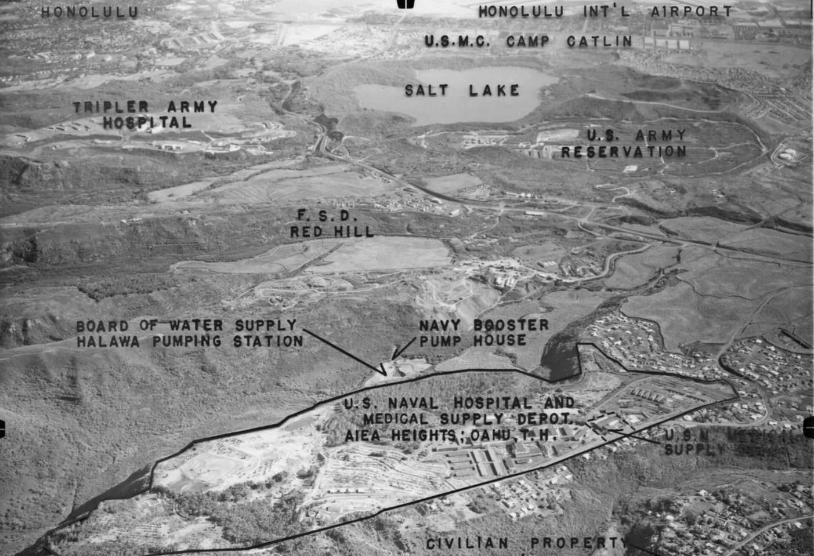
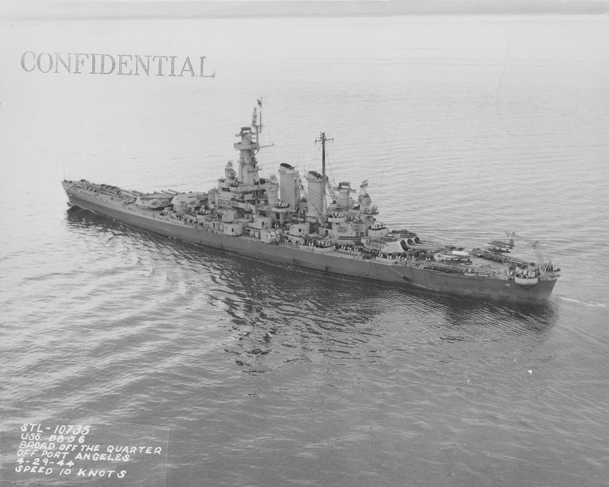

미드웨이에서의 레이더 이야기 (7) - 미-일의 비교되는 사후 평가
게시: 2024-02-01T06:30:13+09:00
<정북 vs. 자북>
미드웨이 해전은 미해군의 대승리였지만 미해군 입장으로서도 반성할 부분이 많았음. 미해군이 일본해군에 비하면 무척 자유분방하고 군기 빠진 모습을 보여주는 것 같지만 오히려 그런 부분에 대해서 객관적인 사후 평가를 거친다는 점에서는 일본해군보다 훨씬 엄격한 것이 미국과 일본의 문화적 차이. 그렇게 반성할 부분이나 개선안으로 제시된 내용을 나열하면 다음과 같음. - 일부 관제사나 조종사들이 사전에 약속된 용어를 제대로 쓰지 않음. 가령 엔터프라이즈 관제사는 arrow (화살)이라는 용어를 썼는데 그건 방위각에서 자북(magnetic north)가 아니라 정북(true north)를 뜻하는 것. 하지만 이는 엔터프라이즈 내부에서만 쓰는 용어라서 엔터프라이즈 소속 조종사들만 그 용어를 알아들었고, 호넷이나 요크타운 소속 조종사들은 그게 무슨 뜻인지 몰랐음.

(자북과 정북의 차이를 자기 편차(magnetic declination)라고 하고, 이 값은 당연히 지구상의 위치에 따라 다르고, 매년 조금씩 바뀜. 위의 그림에서는 자기 편차가 14도이지만, 현재 미드웨이 섬에서의 자기 편차는 약 7.28도.)

(미드웨이에서 자북을 정북으로 혼동했을 경우 당시 조종사들에게는 어느 정도의 영향을 주었을까? 1942년 당시에도 지금의 자기 편차 그대로였다고 가정하면, 엔터프라이즈와 호넷에서 일본해군 기동부대를 향해 뇌격기들이 이함할 때 두 함대 사이의 거리가 290km였으니 7.28도 빗나간 방향으로 290km를 날면 그 두 지점 사이의 원호 거리는 2 * Pi * 반지름 * (각도/360) = 2 * 3.14 * 290 * (7.28 / 360) = 36.8 km. 찾을 수 있는 일본함대를 못 찾기에 충분히 먼 거리.) - IFF가 장착된 함재기들의 비율이 낮다보니, 저 멀리 레이더 상에 뭔가 나타날 때마다 CAP 전투기들이 달려가 확인을 해야 했고, 그것이 꽤 큰 부담으로 작용. - 과묵한 일본해군 전투기 조종사들과는 달리 미해군 조종사들은 별도의 전투기 전용 무선 채널 (fighter net radio)에서 훨씬 활발하게 의사소통을 하며 합동 작전을 잘 펼치기는 했는데, 역시나 너무들 많이 떠들어대다 보니 관제사가 중요 정보를 파악하고 지시를 전달하는데 애를 먹을 정도. 그렇다고 일본 조종사들처럼 과묵함을 강조하는 것은 답이 아니라고 보았고, 대신 '수퍼 주파수'(super frequency)로 몇 개 채널을 따로 장만하여 각 항모의 관제사들끼리 중요 정보를 주고받을 수 있는 관제사 전용 채널을 마련하자는 의견이 나옴. - 일본해군은 느리지만 매우 장시간 체공할 수 있는 순양함 탑재 수상기를 이용하여 미해군 항모전단의 위치를 꽤 성공적으로 파악하고 장시간 추적하며 일본 공격 편대를 유도. 미해군이 snooper(염탐꾼)이라고 불렀던 그런 정찰용 수상기들을 미해군이 레이더로 포착하는 것까지는 좋았으나, 그것들을 신속하게 격추시키는 데는 실패한 것이 문제. 미해군은 이 정찰기들이 일본해군의 전술적 '눈'에 해당하므로 이것들을 재빨리 격추하는 것이 매우 중요하며, 이것들이 이미 아군 항모전단의 위치를 무전으로 전송한 뒤라고 해도 추가 유도를 못하게 하기 위해서라도 반드시 발견 즉시 격추해야 한다고 강조.
<X-ray 대형>
니미츠 제독은 요크타운 상실에 대해 제출한 보고서에서 '그래도 요크타운을 습격해온 일본해군 폭격기와 뇌격기, 전투기들은 절반 이상이 격추되었다'라고 애써 칭찬. 하지만 CXAM 레이더로 미리 충분한 경고를 받았음에도 불구하고 요크타운이 격침된 것은 엄연한 사실. 그 이유는 기본적으로 '결국 폭격기는 방어망을 돌파하기 마련'이라는 숙명론적인 것도 있지만, 가장 아쉬웠던 점은 침투해오는 적기들의 고도를 CXAM 레이더로는 정확하고 신속하게 파악할 수 없었다는 부분. 특히 급강하 폭격기는 고공으로, 뇌격기는 저공으로 침투하다보니 극과 극이라서 어느 고도로 아군 전투기들을 내보내야 하는지가 요격 성공률에 매우 중요. 이에 대한 미해군의 대응은 'X-ray formation'. 당장의 기술적 한계 때문에 정확한 고도 파악은 어려우니, 고도 파악이 어려운 적 편대를 요격하러 나갈 때는 요격기들을 크게 3개 편대로 내보내되 주력 편대는 6km 고도로, 그리고 4대 (1 division)는 주력 편대의 1.5km 더 높은 고도로, 그리고 2대(1 section)은 주력 편대보다 1.5km 더 낮은 고도로 내보내라는 것. 이렇게 편대를 3km 고도에 걸쳐 3층으로 쌓아서 내보냄으로써 낮은 고도와 높은 고도로 침투하는 적기들을 더 높은 확률로 포착하자는 것이 X-ray 대형의 핵심.

(1942년 11월 북아프리카에서 작전 중인 USS Ranger (CV-4, 1만7천톤, 29노트) 함상의 F4F Wildcat 전투기. 함교 위에 커다랗게 달린 CXAM 레이더가 보임.)
<비교 되는 일본해군의 대응>
싸움에 지는 것은 병가지상사라는 말은 결코 입에 발린 소리가 아님. 그 어떤 군대도 항상 이길 수는 없고, 간혹 질 때마다 거기서 뭔가 교훈을 배워 앞으로는 그렇게 지지 않도록 고쳐야 함. 그런 면에서 객관적인 평가를 하고 더 나은 전투 교리를 만들어나가는 미해군의 문화는 정말 본받아야 할 것.
그에 비해 일본해군은 매우 좋은 반면교사. 레이더 기술이 낙후된 것은 단기간 안에 어쩔 수 없다고 치더라도, 이렇게 패배했음에도 불구하고 일본해군 조종사들의 무선침묵 규정은 거의 변하지 않았고, 무전기 성능 개선을 위한 특별 노력은 이루어지지 않았음.
제독과 함장 등 주요 지휘관들은 아무도 징계를 받지 않았고, 나구모 중장은 새로운 부대의 지휘권을 받음. 그러나 살아남은 하급장교들과 수병들에 대한 처우는 매우 가혹. 부상병들은 본국으로 돌아왔으나 모두 '비밀 환자'로 격리 병동에 감금됨. 미드웨이에서의 패전을 대중에게 비밀로 하기 위한 조치. 살아남은 수병들도 모두 가족 및 친지들을 면회하는 것이 금지되고 즉각 남태평양 전선에 투입되어 죽을 때까지 싸우게 함.
일본이 부족한 물자를 정신력으로 극복한다? 진짜 개솔휘임.

(이건 미드웨이 해전의 사진이 아니라 1944년 10월, 레이테만 해전에서 격침되는 일본 항모 즈이가꾸의 모습. 함대 사령관인 오자와 제독이 다른 배로 옮겨타기 위해 깃발을 내리자, 기울고 있는 비행갑판 위에서 수병들이 그 깃발 하강식에 대해 경례를 하고 있음. 일본의 문제점을 잘 보여주는 전형적인 모습. 저렇게 기울었다면 당연히 배를 버리라는 명령이 진작에 내려왔어야 하는데 빨리 뗏목이든 구명복이든 챙겨야 하는데 깃발 하강식에 경례질이나 하고 있다니! 842명이 사망하고 862명이 구조되었는데, 구조된 수병들 대부분은 미드웨이 생존자들과 동일한 대우를 받았음. 즉, 모두 가망 없는 남방 전선에 배치되어 죽을 때까지 싸우게 했고, 진주만 습격에 참여했던 마지막 생존 항모였던 즈이가꾸의 격침 소식은 일본 대중들에게 비밀에 붙여졌음.)
<하나의 학교, 5단계의 코스> 이제 막 건조에 들어거가나 주문이 들어간 Essex급 정규 항모들을 위해 더 많은 레이더 관제사들이 필요할 것이라는 것은 분명. 문제는 그 수가 Jack Griffin 중령이 운영하던 샌디에고 레이더 관제사 학교에서 배출할 수 있는 숫자보다 훨씬 더 많았다는 것. 그 문제는 샌디에고 레이더 관제사 학교를 확장하거나, 혹은 하와이에 학교를 추가로 더 개설하면 해결 가능. 그러나 미드웨이 해전에서의 교훈에 따라, 니미츠 제독은 레이더 관제사들이 모두 동일한 훈련을 받는 것이 중요하다고 판단. 그래서 지형상 확장에 한계가 있던 샌디에고 관제사 학교를 아예 하와이의 Camp Catlin으로 옮겨와 크게 확장하기로 결정. 이와 동시에 이미 하와이 진주만 안에 있던 레이더 정비사 학교도 그리핀 중령의 지휘 하에 두었을 뿐만 아니라, 아예 캠프 캐이틀린 안에 새로운 조직인 Pacific Fleet Radar Center를 개설하고 그 지휘관도 그리핀 중령이 맡도록 함. 그 센터에는 아래 학교들이 새로 만들어짐. - 레이더 운용사(operator) 학교 - 레이더 대응전(countermeasure) 학교 - 고위 장교들을 위한 레이더 전술 학교 - 전투기 관제 및 고급 레이더 작도법(plotting) 학교

(하와이의 Camp Catlin의 위치가 위 사진의 윗쪽 부분에 표시되어 있는데, 보시는 바와 같이 해병대 기지. 저렇게 넓은 부지에 해군 항공대도 바로 옆에 있고, 무엇보다 민간 선박이나 항공기 등의 활동에 걸리적거리지 않고 훈련할 수 있으니 샌디에고보다 훨씬 더 좋은 입지.)
이 레이더 센터의 교육 과정은 Course I, II, III, IV, V까지 5단계로 나누어졌는데, 이론 강의와 함께 plotting board 사용법 같은 매우 기초적이고 실무적인 훈련, 레이더 신호 해석 훈련 및 실제 전투기 지휘 관제 전술 훈련 같은 다양한 과정이 포함됨. 최종 단계인 Course V에는 호놀룰루 해군 항공대(Honolulu Naval Air Station Annex)의 지원을 받아 실제 전투기와 실제 레이더를 이용한 레이더-전투기 관제 훈련 실습까지 포함되었는데... 아무리 돈이 많은 미해군이라고 하더라도 어떻게 관제사 훈련에 실제 전투기들을 동원할 수 있었을까? 여기엔 미드웨이 해전에서 레이더의 중요성을 실감한 니미츠 제독의 전폭적인 지원도 있었지만, Course V까지 가는 관제사 훈련생 숫자를 확 줄였기 때문에 가능. 그 이전 단계의 교육 과정에서 일정 점수 이상을 못 받은 훈련생들은 Course III까지만 마치고 원대로 복귀시켰고, 그렇게 Course III까지만 마친 장교들은 각 함정에서 레이더 통제장교로 활약할 수는 있었지만 전투기 관제사 자격을 주지는 않았음.

(전투기 관제를 못하면 레이더 학교에서 익힌 기술은 쓸모 없어지는 것 아닐까 싶지만 레이더는 함대함 포격전에서도 매우 유용하게 사용되었고, 레이더 학교에서는 레이더를 이용한 포격에 대해서도 가르침. 가령 1942년 11월의 과달카날 전투에서, 야간에 일본 함대와 마주친 미국 함대는 레이더를 이용하여 어둠 속에서도 매우 효과적인 포술을 구사. 위 사진 속의 USS Washington (BB-56, 4만5천톤, 28노트)는 레이더를 이용하여 일본 순양전함 기리시마 (3만7천톤, 30노트)를 어둠 속에서 일방적으로 두들겨 패서 격침시킴.)
또한 아무리 레이더-전투기 관제사(Fighter Director Officer, FDO)가 우수한 실력을 갖추었다고 해도, 함장이나 비행단장 등 전투 지휘관이 레이더에 대한 이해가 없으면 FDO가 제 역할을 수행할 수 없으므로 그런 고급 장교들에게 레이더 관제의 중요성을 알려주는 4일~10일짜리 교육도 실시.